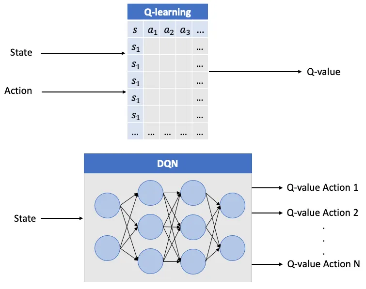
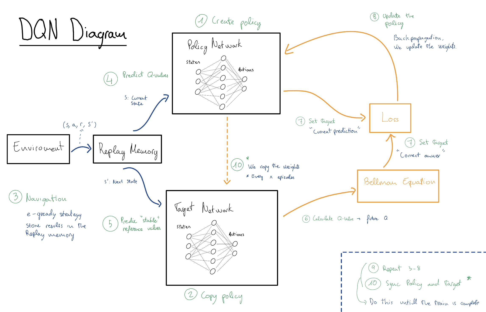

Author: Eduardo Martín Postigo Subject: Comparative Analysis of DQN, TD3, and SAC
Modern Deep Reinforcement Learning (DRL) has evolved from simple tabular methods to complex architectures capable of handling high-dimensional state spaces and continuous action domains. This report examines the transition from value-based discrete methods to state-of-the-art actor-critic stochastic frameworks, focusing on the mechanical improvements that provide stability and efficiency.
To classify any Reinforcement Learning algorithm, we evaluate it across these four fundamental dimensions.
Once these few aspects are clarified, we can better understand the differences between each approach.
| DQN | DDPG | TD3 | SAC | PPO | |
|---|---|---|---|---|---|
| Paradigm | Off-Policy | Off-Policy | Off-Policy | Off-Policy | On-Policy |
| Action Space | Discrete | Continuous | Continuous | Continuous | Continuous |
| Policy Type | Deterministic | Deterministic | Deterministic | Stochastic | Stochastic |
| Architecture | Value-Based | Actor-Critic | Actor-Critic | Actor-Critic | Actor-Critic |
| Exploration | $\epsilon$-greedy | Added Noise | Added Noise | Max Entropy | Probability Dist. |
| Stability | Medium | Low | High | Very High | High |
| Sample Efficiency | High | High | High | Very High | Low |
DQN represents the first major successful integration of Deep Learning with Reinforcement Learning. It was the breakthrough that allowed agents to move beyond simple grids and solve tasks with high-dimensional sensory inputs, such as raw pixels, by approximating the optimal action-value function $Q^*(s, a)$ using a neural network.
DQN is fundamentally a Value-Based method. It does not learn a policy directly; instead, it learns to estimate the "quality" of taking a specific action in a specific state.
The agent improves its estimation by iteratively solving the Bellman Equation. The goal is to minimize the difference between the current Q-prediction and the "Target" (the immediate reward plus the discounted value of the next best state):
$$Q(s, a) \leftarrow Q(s, a) + \alpha [r + \gamma \max_{a'} Q(s', a') - Q(s, a)]$$
To train the neural network (CNN), we minimize the Mean Squared Error (MSE) between our current prediction and the stable target:
$$L(\theta) = \mathbb{E} \left[ ( \underbrace{r + \gamma \max_{a'} Q(s', a'; \theta^{-})}{\text{Stable Target}} - \underbrace{Q(s, a; \theta)}{\text{Current Prediction}} )^2 \right]$$
The core shift in DQN is the representation of knowledge.
CarRacing-v2, there are too many possible pixel combinations to store in a table.
Figure 1: Structural comparison between traditional Tabular Q-Learning and Deep Q-Networks (DQN). Traditional Q-Learning relies on an exhaustive lookup table, which becomes computationally infeasible for high-dimensional sensory inputs. In contrast, DQN utilizes a neural network (CNN) to approximate Q-values, enabling the agent to generalize patterns and features from raw pixel observations. Source: Marta Comes Hernandez (Medium)Standard neural networks are notoriously unstable when used for RL because the data is non-stationary (the agent's behavior changes as it learns). DQN solves this with three key mechanisms:
Since DQN is a deterministic value-based method, the agent would always take the same "greedy" action if not forced to explore.
In a driving simulation, consecutive frames are nearly identical. If the network learns from these frames in order, it suffers from "catastrophic forgetting" and high data correlation.
If we use the same network to calculate the prediction and the target, the target moves every time we update the weights. This creates a feedback loop that often leads to divergence.

Figure 1: Procedural architecture and data flow of a Deep Q-Network (DQN) training cycle.DDPG was developed as a solution to the limitations of Deep Q-Networks (DQN) in continuous action spaces. While DQN relies on a discrete set of actions to calculate a maximum $Q$-value, DDPG utilizes an Actor-Critic architecture to output exact, continuous values.
DDPG updates the Actor by moving it in the direction of the gradient provided by the Critic. This is known as the Deterministic Policy Gradient:
$$\nabla_{\phi} J \approx \nabla_a Q_{\theta}(s, a) \nabla_{\phi} \mu_{\phi}(s)$$
The Critic is updated by minimizing the Mean Squared Error (MSE) against a target $y$:
$$L = \mathbb{E} [(y - Q_{\theta}(s, a))^2]$$
where the target is computed using target networks ($\theta', \phi'$) to maintain stability:
$$y = r + \gamma Q_{\theta'}(s', \mu_{\phi'}(s'))$$
A fundamental flaw in DDPG is Overestimation Bias. Because the algorithm consistently uses the maximum estimated value (or the action that the Actor believes yields the maximum value) to calculate targets, noise in the $Q$-function leads to a positive bias.
Over time, these errors accumulate, causing the agent to develop "delusions" about the value of certain states. In the context of car racing, this often manifests as the agent getting stuck in local optima or failing to recover from high-speed turns due to inaccurate value estimations.
TD3 (Twin Delayed DDPG) introduces three specific mechanisms to address the instabilities of DDPG.
To combat overestimation, TD3 employs two independent Critic networks ($Q_{\theta_1}, Q_{\theta_2}$). When calculating the target value, it takes the minimum of the two estimates. This conservative approach prevents the agent from over-exploiting noisy $Q$-value peaks.
TD3 Target Definition: $$y = r + \gamma \min_{i=1,2} Q_{\theta'_i}(s', a')$$
DDPG updates the Actor and Critic simultaneously at every step. However, if the Critic is still inaccurate, the Actor's update will be based on "false" information. TD3 addresses this by:
This allows the value function to stabilize before the policy is allowed to change.
Deterministic policies are prone to overfitting to narrow "spikes" in the $Q$-function. TD3 adds clipped random noise to the action used for the target calculation. This serves as a regularizer, forcing the Critic to learn that similar actions should yield similar rewards.
Smoothed Target Action: $$a' = \text{clip}(\mu_{\phi'}(s') + \epsilon, a_{low}, a_{high})$$ $$\epsilon \sim \text{clip}(\mathcal{N}(0, \sigma), -c, c)$$
| Feature | DDPG | TD3 |
|---|---|---|
| Critics | One Network | Two (Twin) Networks |
| Target Logic | $Q(s', \mu(s'))$ | $\min(Q_1, Q_2)(s', a')$ |
| Update Cadence | Simultaneous | Delayed Policy Updates |
| Policy Robustness | Susceptible to $Q$-spikes | Target Policy Smoothing |
| Performance | High variance | Stable & Robust |
SAC is an off-policy actor-critic algorithm that utilizes a stochastic policy. It is distinguished by its focus on Maximum Entropy Reinforcement Learning.
Instead of just maximizing the expected reward, SAC aims to maximize the reward plus the entropy ($\mathcal{H}$) of the policy. Entropy represents the "randomness" or "uncertainty" of the agent's choices. $$J(\pi) = \sum_{t=0}^{T} \mathbb{E}{(s_t, a_t) \sim \rho\pi} [r(s_t, a_t) + \alpha \mathcal{H}(\pi(\cdot|s_t))]$$
| Feature | DQN | TD3 | SAC |
|---|---|---|---|
| Action Space | Discrete | Continuous | Continuous |
| Policy Nature | Deterministic | Deterministic | Stochastic |
| Stability Strategy | Target Network | Clipped Double-Q | Entropy Regularization |
| Exploration | $\epsilon$-greedy | Additive Noise | Entropy Maximization |
The progression from DQN to SAC shows a shift from stabilizing value targets toward stabilizing the exploration process itself. DQN introduced the necessary infrastructure (Buffers and Targets), TD3 refined the value estimation through pessimism (Clipped Q), and SAC integrated exploration directly into the mathematical objective through Entropy. Understanding these differences allows researchers to select the most appropriate tool based on the complexity and continuity of the task at hand.
DQN was limited to buttons. DDPG introduced the Actor-Critic framework to off-policy learning, allowing for "pedal" control. However, DDPG was prone to "divergence"—it would often learn a bad policy and never recover because its Critic was too optimistic.
TD3 fixed DDPG by adding three stability mechanisms:
While TD3 is precise, it can be rigid. SAC introduced Entropy Regularization. Instead of just trying to get a high score, SAC tries to get a high score while being as "random" as possible.